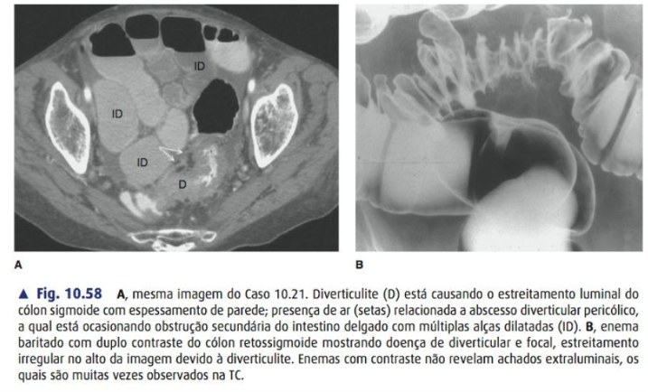

🔍 Quadro & diagnóstico
📍 Local #1
Sigmoide (Ocidente) · "apendicite da esquerda"
🌏 Direita
Ásia/jovens — pode simular apendicite
🤒 Clínica
Dor FIE + febre + alteração do hábito
🧱 Lesão
Pseudodivertículo (mucosa+submucosa) no ponto do vaso reto
🖥️ Imagem
- 👑 TC c/ contraste = padrão-ouro (dx + gravidade + classifica)
- Achados: espessamento >4 mm + fat stranding + abscesso/gás livre
- 📈 PCR >150 → maior chance de complicação/perfuração

Fig. 10.58 — TC (A): diverticulite sigmoide com abscesso pericólico (ar = setas) causando obstrução secundária de delgado (múltiplas alças dilatadas, ID). Enema baritado (B): estreitamento irregular por diverticulite — não mostra o abscesso.
🚫 Nunca na fase aguda
Colonoscopia é CONTRAINDICADA (risco de perfurar). Fazer 4–6 semanas depois para excluir câncer colorretal (o CA simula diverticulite). ⏳
Cai na prova HCPA·PUC
Imagem inicial = TC (não enema, não colono). Colono só tardia.
💊 Tratamento
😌 Não complicada
- 💥 Nem sempre ATB! AVOD · DIABOLO · DINAMO → seguro sem ATB se imunocompetente + sem sepse + tolera VO
- 🏠 Ambulatorial + reavaliar em 7 dias
- 💉 ATB reservado: sepse, imunossupressão, gestante, comorbidade, sem VO
🔥 Complicada
Abscesso <4–5 cm
💉 ATB IV isolado
Abscesso ≥4–5 cm
🪡 Drenagem percutânea + ATB
Hinchey III (estável)
🔪 Sigmoidectomia + anastomose primária ± ileostomia
Hinchey IV / instável
🎒 Hartmann (colostomia terminal)
🚱 Lavado laparoscópico FORA
Braço LOLA (LADIES) encerrado: mais morbidade, reintervenção, abscessos e cânceres perdidos. Lavar sem ressecar ≠ tratamento.
🗓️ Eletiva — quando
- Após complicada, fístula, estenose, doença arrastada, suspeita de CA
- 🚫 Idade <50 NÃO é indicação isolada · não conta nº de crises
- ✂️ Margem distal no reto proximal (tira toda junção retossigmóidea)
Cai na prova SC-POA·HCPA
Estável → anastomose primária ± ileostomia > Hartmann. Hartmann = instável/imunossup/fecal.
🔪 Sigmoidectomia — 9 passos
🟢 tradução simplesA operação é sempre a mesma: tirar o sigmoide doente. O que muda é depois — emendar agora (AP) ou emendar depois (Hartmann). E isso não depende só do Hinchey: depende de como o paciente está na mesa.
1
controle de foco🛏️ Lloyd-Davies + Trendelenburg · lavagem exaustiva · classificar Hinchey na mesa
por quêHinchey original é classificação cirúrgica — nasceu p/ ser aplicada na mesa. É aqui que se separa III purulenta × IV fecal, e isso muda a reconstrução.
2
mobilização✂️ Liberar cólon E pela linha branca de Toldt
por quêNa diverticulite o plano está obliterado pela inflamação. A via lateral, mais grosseira, costuma ser mais segura na urgência que a medial elegante da oncológica.
3
crítico🚨 Identificar o ureter esquerdo · ± cateter ureteral
por quêRisco maior que no câncer: a inflamação crônica puxa o ureter para dentro do bloco e apaga os planos. Por isso o cateter tem indicação mais liberal aqui. ⚠️
4
vascular🩸 Ligar sigmoideos · preservar a cólica esquerda
por quêAqui não há necessidade oncológica de ligar na origem — sem linfonodo apical p/ colher, liga-se mais distal e preserva perfusão, que é o que a anastomose em campo contaminado mais precisa.
5
mobilizaçãoAbaixar o ângulo esplênico se preciso
por quê"Sem tensão" é o único dos 4 pré-requisitos da anastomose que ainda está totalmente sob controle do cirurgião em campo inflamado.
6
evita recidiva🔻 Secção distal no RETO PROXIMAL — tira toda a junção retossigmóidea
por quêDetalhe mais cobrado. Sigmoide distal residual = causa nº1 de recidiva. Referência: onde as tênias se dispersam, começa o reto. Margem proximal não precisa tirar todos os divertículos. 📏
7
secção proximal🔺 Cólon sem inflamação aguda, sangrando arterial
por quêAnastomosar cólon inflamado + hipoperfundido = os 2 fatores de deiscência juntos. E o retossigmoide já é Sudeck, watershed natural. 🫀
8
a decisão🔗 AP (EEA + air-leak + donuts) × 🎒 Hartmann
por quêA pergunta não é qual é melhor, é: este paciente cicatriza uma anastomose agora? AP é segura no estável e gera muito mais reconstrução de trânsito. Hartmann parece "mais seguro" mas transfere o risco: evita a fístula hoje ao custo de um estoma que muitas vezes nunca é revertido. ⚖️
9
proteção🛡️ Ileostomia em alça seletiva
por quêMesmo princípio do reto: não impede a fístula, reduz a gravidade. Meio-termo entre AP desprotegida e Hartmann.
🎒 Se Hartmann — os detalhes
Colostomia terminal FIE + fechar o coto retal.
🧵 Marcar o coto com fio longo (ou clipes) e deixá-lo o mais longo possível — na reversão a pelve estará cheia de aderências e o coto retraído. O fio é o que permite achá-lo.
Reversão em 3–6 meses — e nem sempre acontece.
🧠 4 checagens antes de anastomosar na urgência
① Estável, sem DVA crescente? ② Purulenta (III), não fecal (IV)? ③ Secção chegou ao reto proximal? ④ Coto sangra arterial e chega sem tensão?
Qualquer "não" → Hartmann ou ileostomia.